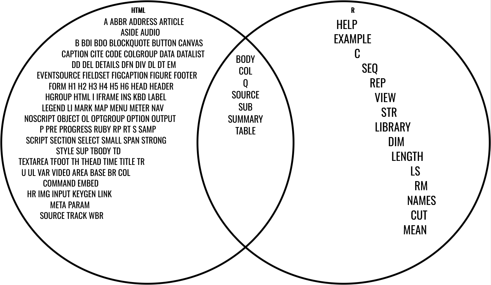

Translating R code
Learning objectives:
- Build DSL (domain specific languages) to aid interoperability between R, HTML and LaTeX
- Reinforce metaprogramming concepts (expressions, quasiquotation, evaluation)
Mermaid code
Session Info
library(DiagrammeR) #for Mermaid flowchart
library(lobstr) #abstract syntax trees
library(purrr) #functional programming
library(rlang) #tidy evaluation
# from section 18.5
expr_type <- function(x) {
if (rlang::is_syntactic_literal(x)) {
"constant"
} else if (is.symbol(x)) {
"symbol"
} else if (is.call(x)) {
"call"
} else if (is.pairlist(x)) {
"pairlist"
} else {
typeof(x)
}
}
flat_map_chr <- function(.x, .f, ...) {
purrr::flatten_chr(purrr::map(.x, .f, ...))
}
switch_expr <- function(x, ...) {
switch(expr_type(x),
...,
stop("Don't know how to handle type ", typeof(x), call. = FALSE)
)
}#> R version 4.5.1 (2025-06-13 ucrt)
#> Platform: x86_64-w64-mingw32/x64
#> Running under: Windows 11 x64 (build 26100)
#>
#> Matrix products: default
#> LAPACK version 3.12.1
#>
#> locale:
#> [1] LC_COLLATE=English_United States.utf8
#> [2] LC_CTYPE=English_United States.utf8
#> [3] LC_MONETARY=English_United States.utf8
#> [4] LC_NUMERIC=C
#> [5] LC_TIME=English_United States.utf8
#>
#> time zone: America/Chicago
#> tzcode source: internal
#>
#> attached base packages:
#> [1] stats graphics grDevices utils datasets methods base
#>
#> other attached packages:
#> [1] rlang_1.1.6 purrr_1.1.0 lobstr_1.1.2 DiagrammeR_1.0.11
#>
#> loaded via a namespace (and not attached):
#> [1] digest_0.6.37 RColorBrewer_1.1-3 R6_2.6.1 fastmap_1.2.0
#> [5] xfun_0.52 magrittr_2.0.3 glue_1.8.0 knitr_1.50
#> [9] htmltools_0.5.8.1 rmarkdown_2.29 lifecycle_1.0.4 cli_3.6.5
#> [13] visNetwork_2.1.2 vctrs_0.6.5 compiler_4.5.1 tools_4.5.1
#> [17] evaluate_1.0.4 yaml_2.3.10 jsonlite_2.0.0 htmlwidgets_1.6.4
#> [21] keyring_1.4.1Case Study: MCQ
We are going to use R code to generate HTML or LaTeX to produce multiple-choice questions such as
Pop Quiz!
What is the derivative of \(f(x) = 1 + 2\cos(3\pi x + 4)\)?
- \(f'(x) = 6\pi\sin(3\pi x + 4)\)
- \(f'(x) = -6\pi\sin(3\pi x + 4)\)
- \(f'(x) = 24\pi\sin(3\pi x + 4)\)
- \(f'(x) = -24\pi\sin(3\pi x + 4)\)
A whisker plot
As developers, we may be asking ourselves:
- What are the expressions?
- What are the symbols?
- Will we have to quote inputs from the user (math teacher)?
HTML
We are trying to produce
<body>
<h1 id = 'pop_quiz'>Pop Quiz</h1>
<ol>
<li>What is the <b>derivative</b> of $f(x) = 1 + 2\cos(3\pi x + 4)$?</li>
<ol>
<li>$f'(x) = 6\pi\sin(3\pi x + 4)$</li>
<li>$f'(x) = -6\pi\sin(3\pi x + 4)$</li>
<li>$f'(x) = 24\pi\sin(3\pi x + 4)$</li>
<li>$f'(x) = -24\pi\sin(3\pi x + 4)$</li>
</ol>
</ol>
<img src = 'calculus_cat.png' width = '100' height = '100' />
</body>using DSL
with_html(
body(
h1("Pop quiz!", id = "pop_quiz"),
ol(
li("What is the ", b("derivative"), "of $f(x) = 1 + 2cos(3pi x + 4)$?"),
ol(
li("$f'(x) = 6pi*sin(3pi x + 4)$"),
li("$f'(x) = -6pi*sin(3pi x + 4)$"),
li("$f'(x) = 24pi*sin(3pi x + 4)$"),
li("$f'(x) = -24pi*sin(3pi x + 4)$")
)
),
img(src = "images/translating/calculus_cat.png", width = 100, height = 100)
)
)In particular,
- tags such as
<b></b>have attributes - void tags such as
<img /> - special characters:
&,<, and>
HTML verification
Pop Quiz
- What is the derivative of $f(x) = 1 + 2\cos(3\pi x + 4)$?
- $f'(x) = 6\pi\sin(3\pi x + 4)$
- $f'(x) = -6\pi\sin(3\pi x + 4)$
- $f'(x) = 24\pi\sin(3\pi x + 4)$
- $f'(x) = -24\pi\sin(3\pi x + 4)$
Escaping
- need to escape
&,<, and> - don’t “double escape”
- leave HTML alone
S3 Class
Generic
Checks
Named Components
li("What is the ", b("derivative"), "of $f(x) = 1 + 2\cos(3\pi x + 4)$?")- aiming to classify
liandbas named components
Check
#> List of 2
#> $ named :List of 2
#> ..$ company : chr "Posit"
#> ..$ software: chr "RStudio"
#> $ unnamed:List of 2
#> ..$ : chr "DSLC"
#> ..$ : chr "Cohort 9"HTML Attributes
Found among the textbook’s source code
html_attributes <- function(list) {
if (length(list) == 0) return("")
attr <- map2_chr(names(list), list, html_attribute)
paste0(" ", unlist(attr), collapse = "")
}
html_attribute <- function(name, value = NULL) {
if (length(value) == 0) return(name) # for attributes with no value
if (length(value) != 1) stop("`value` must be NULL or length 1")
if (is.logical(value)) {
# Convert T and F to true and false
value <- tolower(value)
} else {
value <- escape_attr(value)
}
paste0(name, "='", value, "'")
}
escape_attr <- function(x) {
x <- escape.character(x)
x <- gsub("\'", ''', x)
x <- gsub("\"", '"', x)
x <- gsub("\r", ' ', x)
x <- gsub("\n", ' ', x)
x
}Tags (calls)
tag <- function(tag) {
new_function(
exprs(... = ), #arguments of new function
expr({ #body of the new function
#classify tags as named components
dots <- dots_partition(...)
#focus on named components as the tags
attribs <- html_attributes(dots$named)
# otherwise, nested code
children <- map_chr(dots$unnamed, escape)
# paste brackets, tag names, and attributes together
# then unquote user arguments
html(paste0(
!!paste0("<", tag), attribs, ">",
paste(children, collapse = ""),
!!paste0("</", tag, ">")
))
}),
caller_env() #return the environment
)
}Void tags
void_tag <- function(tag) {
new_function(
exprs(... = ), #allows for missing arguments
expr({
dots <- dots_partition(...)
# error check
if (length(dots$unnamed) > 0) {
abort(!!paste0("<", tag, "> must not have unnamed arguments"))
}
attribs <- html_attributes(dots$named)
html(paste0(!!paste0("<", tag), attribs, " />"))
}),
caller_env()
)
}Checks
#> function (...)
#> {
#> dots <- dots_partition(...)
#> attribs <- html_attributes(dots$named)
#> children <- map_chr(dots$unnamed, escape)
#> html(paste0("<ol", attribs, ">", paste(children, collapse = ""),
#> "</ol>"))
#> }Tags (processing)
Venn Diagram

tags <- c("a", "abbr", "address", "article", "aside", "audio",
"b","bdi", "bdo", "blockquote", "body", "button", "canvas",
"caption","cite", "code", "colgroup", "data", "datalist",
"dd", "del","details", "dfn", "div", "dl", "dt", "em",
"eventsource","fieldset", "figcaption", "figure", "footer",
"form", "h1", "h2", "h3", "h4", "h5", "h6", "head", "header",
"hgroup", "html", "i","iframe", "ins", "kbd", "label",
"legend", "li", "mark", "map","menu", "meter", "nav",
"noscript", "object", "ol", "optgroup", "option", "output",
"p", "pre", "progress", "q", "ruby", "rp","rt", "s", "samp",
"script", "section", "select", "small", "span", "strong",
"style", "sub", "summary", "sup", "table", "tbody", "td",
"textarea", "tfoot", "th", "thead", "time", "title", "tr",
"u", "ul", "var", "video"
)
void_tags <- c("area", "base", "br", "col", "command", "embed",
"hr", "img", "input", "keygen", "link", "meta", "param",
"source", "track", "wbr"
)Example
Bringing the HTML Together
Main Example
with_html(
body(
h1("Pop quiz!", id = "pop_quiz"),
ol(
li("What is the ", b("derivative"), "of $f(x) = 1 + 2cos(3pi x + 4)$?"),
ol(
li("$f'(x) = 6pi*sin(3pi x + 4)$"),
li("$f'(x) = -6pi*sin(3pi x + 4)$"),
li("$f'(x) = 24pi*sin(3pi x + 4)$"),
li("$f'(x) = -24pi*sin(3pi x + 4)$")
)
),
img(src = "images/translating/calculus_cat.png", width = 100, height = 100)
)
)#> <HTML> <body><h1 id='pop_quiz'>Pop quiz!</h1><ol><li>What is the
#> <b>derivative</b>of $f(x) = 1 + 2cos(3pi x + 4)$?</li><ol><li>$f'(x) =
#> 6pi*sin(3pi x + 4)$</li><li>$f'(x) = -6pi*sin(3pi x +
#> 4)$</li><li>$f'(x) = 24pi*sin(3pi x + 4)$</li><li>$f'(x) =
#> -24pi*sin(3pi x + 4)$</li></ol></ol><img
#> src='images/translating/calculus_cat.png' width='100' height='100'
#> /></body>Check
Pop quiz!
- What is the derivative of $f(x) = 1 + 2cos(3pi x + 4)$?
- $f'(x) = 6pi*sin(3pi x + 4)$
- $f'(x) = -6pi*sin(3pi x + 4)$
- $f'(x) = 24pi*sin(3pi x + 4)$
- $f'(x) = -24pi*sin(3pi x + 4)$
LaTeX
to_math
Known Symbols
greek_letters <- c(
"alpha", "beta", "chi", "delta", "Delta", "epsilon", "eta",
"gamma", "Gamma", "iota", "kappa", "lambda", "Lambda", "mu",
"nu", "omega", "Omega", "phi", "Phi", "pi", "Pi", "psi", "Psi",
"rho", "sigma", "Sigma", "tau", "theta", "Theta", "upsilon",
"Upsilon", "varepsilon", "varphi", "varrho", "vartheta", "xi",
"Xi", "zeta"
)
greek_env <- rlang::as_environment(
rlang::set_names(
paste0("\\", greek_letters), #latex values
greek_letters #R names
)
)#> List of 38
#> $ zeta : chr "\\zeta"
#> $ Xi : chr "\\Xi"
#> $ xi : chr "\\xi"
#> $ vartheta : chr "\\vartheta"
#> $ varrho : chr "\\varrho"
#> $ varphi : chr "\\varphi"
#> $ varepsilon: chr "\\varepsilon"
#> $ Upsilon : chr "\\Upsilon"
#> $ upsilon : chr "\\upsilon"
#> $ Theta : chr "\\Theta"
#> $ theta : chr "\\theta"
#> $ tau : chr "\\tau"
#> $ Sigma : chr "\\Sigma"
#> $ sigma : chr "\\sigma"
#> $ rho : chr "\\rho"
#> $ Psi : chr "\\Psi"
#> $ psi : chr "\\psi"
#> $ Pi : chr "\\Pi"
#> $ pi : chr "\\pi"
#> $ Phi : chr "\\Phi"
#> $ phi : chr "\\phi"
#> $ Omega : chr "\\Omega"
#> $ omega : chr "\\omega"
#> $ nu : chr "\\nu"
#> $ mu : chr "\\mu"
#> $ Lambda : chr "\\Lambda"
#> $ lambda : chr "\\lambda"
#> $ kappa : chr "\\kappa"
#> $ iota : chr "\\iota"
#> $ Gamma : chr "\\Gamma"
#> $ gamma : chr "\\gamma"
#> $ eta : chr "\\eta"
#> $ epsilon : chr "\\epsilon"
#> $ Delta : chr "\\Delta"
#> $ delta : chr "\\delta"
#> $ chi : chr "\\chi"
#> $ beta : chr "\\beta"
#> $ alpha : chr "\\alpha"Known Functions
Unary Operations
Binary Operations
Even more LaTeX syntax
known_func_env <- child_env(
.parent = empty_env(),
# Binary operators
`+` = binary_op(" + "),
`-` = binary_op(" - "),
`*` = binary_op(" * "),
`/` = binary_op(" / "),
`^` = binary_op("^"),
`[` = binary_op("_"),
# Grouping
`{` = unary_op("\\left{ ", " \\right}"),
`(` = unary_op("\\left( ", " \\right)"),
paste = paste,
# Other math functions
sqrt = unary_op("\\sqrt{", "}"),
sin = unary_op("\\sin(", ")"),
cos = unary_op("\\cos(", ")"),
tan = unary_op("\\tan(", ")"),
log = unary_op("\\log(", ")"),
abs = unary_op("\\left| ", "\\right| "),
frac = function(a, b) {
paste0("\\frac{", a, "}{", b, "}")
},
# Labelling
hat = unary_op("\\hat{", "}"),
tilde = unary_op("\\tilde{", "}")
)Unknown Symbols
\[x + y + f(a, b, c, 10)\]
Unknown Functions
\[f(g + b, c, d(a))\]
Bringing the LaTeX Together
latex_env <- function(expr) {
# Unknown Functions
calls <- calls_grabber(expr)
call_list <- map(set_names(calls), seek_closure)
call_env <- as_environment(call_list)
# Known Functions
known_func_env <- env_clone(known_func_env, call_env)
# Unknown Symbols
names <- names_grabber(expr)
symbol_env <- as_environment(set_names(names), parent = known_func_env)
# Known symbols
greek_env <- env_clone(greek_env, parent = symbol_env)
greek_env
}
to_math <- function(x) {
expr <- enexpr(x)
latex( #return LaTeX code
eval_bare( #eval_bare to ensure use of latex environment
expr, #expression (not quosure)
latex_env(expr) #need to define latex_env
))
}Check
Finishing the Example
(TO DO)